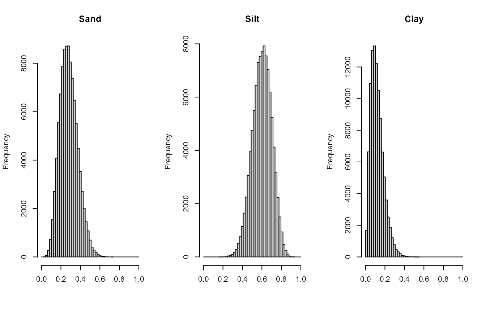

Example model uncertainty and sensitivity
Example_uncertainty_sensitivity.RmdIntroduction
We can use the Rcentury package to assess how uncertainties (aka errors) in a model’s parameters contribute to the overall uncertainty of its output. In general, for many models it is possible to derive approximate analytical expressions for n-error error propagation by using Taylor expansions, which involves calculating analytical n-order derivatives. However, this approach quickly becomes cumbersome and impractical when the number of parameters grows high and, especially, when the function to evaluate is very complex and non-linear like CENTURY. Therefore, to determine error propagation for the CENTURY model we turn to a much simpler Monte Carlo numerical approach, which consists of feeding the model with input parameters of interests which vary randomly at each model run following a given distribution of known mean and variance.
For the sake of simplicity we will demonstrate how to perform an uncertainty propagation analysis of uncertainty in soil texture (i.e. clay, silt and sand) only, keeping all the other parameters of the model fixed. In this case, at each model run we will draw random proportion values for each of the three parameters, calculate the CENTURY model with those values and then save the output. This will be done many times to derive reliable confidence intervals for the output.
Texture is always given as a set of 3 proportions which add up to 1 always, we need to specify a random distribution that accounts for that property. Consequently, we turn to Dirichlet distributions, which allow us to model probability distributions of outcomes for categorical events, such that the total probability adds up to one. For details, see Annex below.
Rcentury simulations
For this example we will use the forest data from CENTURY example files. We will create a temporary directory and move there all necessary files (ASCII data files and executables). The simulation will be carried out with the so-called example, though any other site would do.
from_dir <- system.file("extdata/4.forest", package = "Rcentury")
to_dir <- tempdir()
invisible(file.copy(from_dir, to_dir, overwrite = TRUE, recursive = TRUE))
path_exe <- system.file("bin/windows", package = "Rcentury")
century_exe <- file.path(path_exe, "century_47.exe")
list100_exe <- file.path(path_exe, "list100_47.exe")
to_dir <- file.path(to_dir, "4.forest")
invisible(file.copy(century_exe, to_dir, overwrite = TRUE, recursive = TRUE))
invisible(file.copy(list100_exe, to_dir, overwrite = TRUE, recursive = TRUE))Below we will need package , available from CRAN, which will provide us with a random-number generator for the Dirichlet distribution. We will also load the Rcentury package.
# install.packages("extraDistr")
library(extraDistr)
#> Warning: package 'extraDistr' was built under R version 4.4.3
library(Rcentury)We intend to model the propagation of uncertainty for, and sensibility to, texture parameters. Those parameters are included in the site file, which is then read by during execution. Consequently, we use package functions and to read site data and write it back onto disk at each simulation step.
#
site <- site2 <- read_site(to_dir, "duke.100")
x <- site$`site and control`$df
sand <- x$value[x$field == "SAND"]
silt <- x$value[x$field == "SILT"]
clay <- x$value[x$field == "CLAY"]
alpha <- dirichlet_params(c(sand, silt, clay), c(NA, .01, NA))
nsimu <- 10
df <- list()
for (i in 1:nsimu) {
# Random Dirichlet triplet.
texture_random <- rdirichlet(1, alpha)
# Save <site>.100 file.
x <- site2$`site and control`$df
x$value[x$field == "SAND"] <- texture_random[1]
x$value[x$field == "SILT"] <- texture_random[1]
x$value[x$field == "CLAY"] <- texture_random[1]
site2$`site and control`$df <- x
write_site(site2, to_dir, "duke.100", overwrite = TRUE)
df[[i]] <- century_run(to_dir, "duke.sch", "res.bin", "res.lis", "outvars.txt", verbose = FALSE)
invisible(file.remove(file.path(to_dir, c("res.bin", "res.lis"))))
}Annex: How to draw multivariate proportions
The means of the proportions will be fixed in our simulations.
where:
and:
as well as:
The mean of the is, then:
and the expression for the variance is:
where:
We can use those two expressions to calculate the values when we are given four parameters for the or . The Rcentury package provides with a function, called , that can calculate the values when all the means and one single variance value are known.
For example, for and , , and , we can easily generate sequences of Dirichlet-distributed triplets.
alpha <- dirichlet_params(c(.35, .12, .53), c(NA, .042, NA))
x <- rdirichlet(10000, alpha)
par(mfrow = c(1, 3))
hist(x[, 1], xlab = "", main = "First component")
hist(x[, 2], xlab = "", main = "Second component")
hist(x[, 3], xlab = "", main = "Third component")